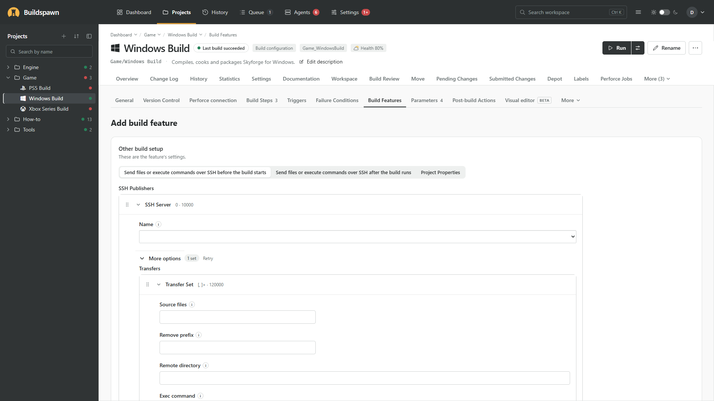

Send files or run commands over SSH before the build
Copies files to a server, or runs commands on it, after the sources are fetched and before the build steps start.
When to use it
Use it to prepare a remote machine, for example to stop a service or to upload tool files before a build starts. The after-the-build version is the same form and runs when the build steps end. To send build output, use the post-build action Send build artifacts over SSH.

How to set it up
- Open the build configuration, click Settings, then Build Features. Click Add build feature and choose Send files or execute commands over SSH before the build starts.
- Under Publishers click Add, and choose the server in Name. An administrator sets up SSH servers in the global settings.
- Add one or more transfer sets: Source files, Remove prefix, Remote directory and Exec command.
- Open Advanced if you need retries, other credentials or a fail rule.
- Click Save.
Every field
The full list of transfer options is on Send build artifacts over SSH. These are the common ones.
| Field | What it does | Default | Example |
|---|---|---|---|
| Name | The SSH server, chosen from the servers set up in the global settings. | None | build-share-01 |
| Source files | Files to send, as a comma separated Ant pattern. The base folder is the workspace. | Empty | Tools/** |
| Remove prefix | The first part of the path that is not created on the server. | Empty | Tools |
| Remote directory | A folder below the one set in the global settings. It is created if it does not exist. | Empty | skyforge/tools |
| Exec command | A command to run on the server after the files are sent. | Empty | sudo systemctl stop skyforge-cache |
| Fail the build if an error occurs | Advanced. Off: a failed transfer only makes the build unstable and the build goes on. On: the build fails and the post-build steps do not run. | Off | On |
| Exec timeout (ms) | Advanced. How long the command may run. 0 turns the timeout off. | 120000 | 60000 |
A worked example
Before the Linux Server Build, the studio stops the cache service on the server: a transfer set with no files and Exec command sudo systemctl stop skyforge-cache.
What you see when it runs
The log shows the connection and each transfer and command before your first build step.
Problems and fixes
| Problem | What to do |
|---|---|
| The build is unstable after the transfer | The publish failed. Read the log. Tick Fail the build if an error occurs if you want the build to stop. |
| No server in the list | An administrator must add an SSH server in the global settings first. |